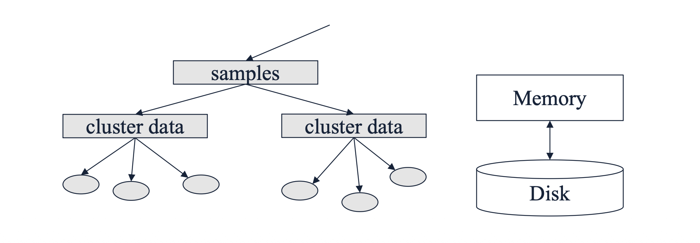
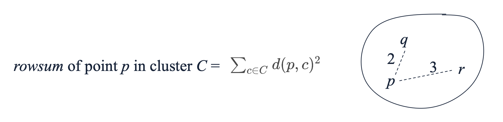
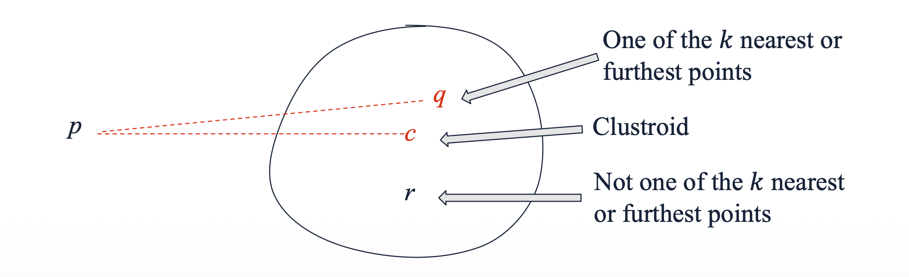
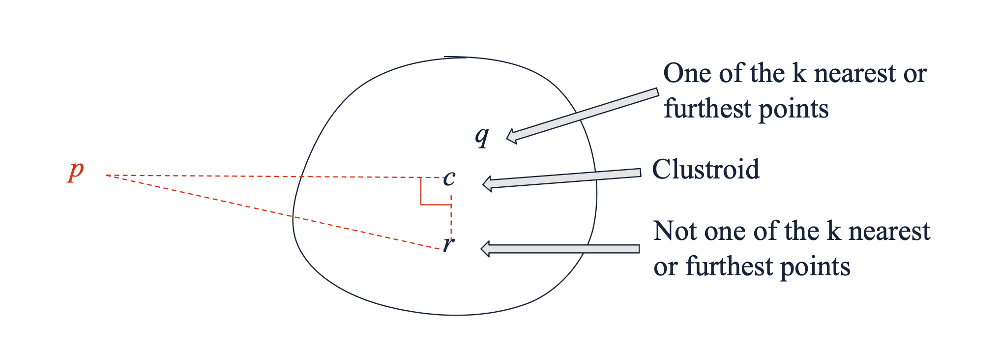
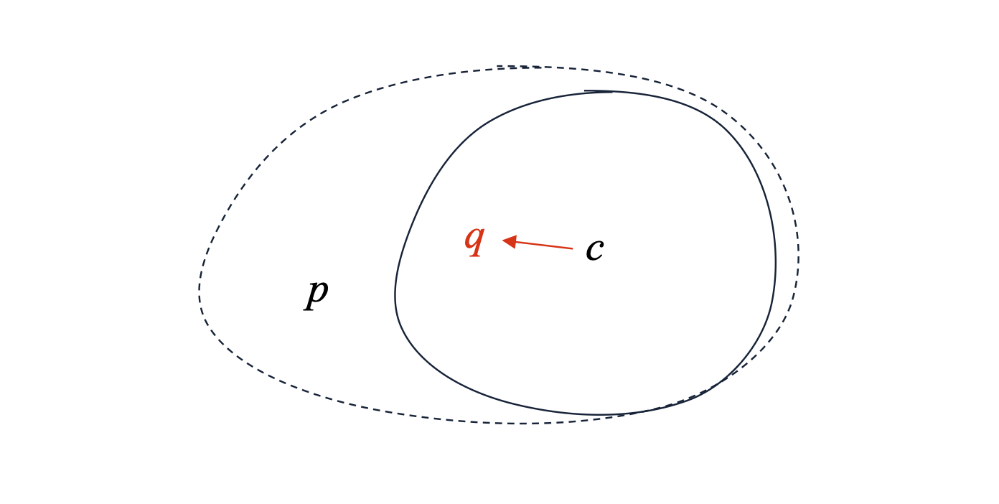

1. Introduction: 비유클리드 공간의 군집화 문제
지금까지 다룬 CURE와 BFR 알고리즘은 대규모 데이터를 훌륭하게 처리하지만, 한 가지 치명적인 한계가 있습니다. 바로 데이터가 유클리드 공간(Euclidean space)에 존재한다고 가정한다는 점입니다. 유클리드 공간에서는 점들의 좌표 평균을 구해 중심점(Centroid)을 쉽게 계산할 수 있습니다.
하지만 문서, 그래프, 유전자 서열과 같이 좌표로 표현하기 어렵고 오직 객체 간의 거리(Distance)만 정의되는 비유클리드 공간(Non-Euclidean space)에서는 중심점이라는 개념 자체가 성립하지 않습니다. 이러한 환경에서 대규모 데이터를 효과적으로 군집화하기 위해 고안된 기법이 바로 GRGPF 알고리즘입니다.
2. GRGPF의 핵심: Clustroid와 트리 구조
GRGPF 알고리즘은 유클리드 공간을 요구하지 않는 대신, 메모리 내에서 잘 선택된 표본 점(well-chosen sample points)들을 활용하여 군집을 표현합니다.
또한 데이터를 단순히 평면적으로 나열하는 것이 아니라 트리(Tree) 형태로 계층화하여 조직합니다. 새로운 데이터 포인트가 들어오면, 이 계층적 트리를 따라 아래로 내려가면서(passing it down the tree) 가장 적절한 군집에 할당하는 방식을 취합니다.

3. Cluster Representation: 군집의 요약 표현
- 중심점(Centroid)을 계산할 수 없다면, 군집을 어떻게 요약(Summarize)해야 할까요? GRGPF 알고리즘은 특정 군집 \(C\)를 표현하기 위해 메모리에 다음과 같은 정보들을 유지합니다.
- \(N\): 군집에 속한 데이터 포인트의 총 개수.
- Clustroid \(c\): 군집을 가장 잘 대표하는 실제 데이터 포인트.
- Clustroid의 Rowsum: Clustroid \(c\)의 Rowsum 값.
- \(k\) Nearest Points: Clustroid와 가장 가까운 \(k\)개의 점들과 각각의 Rowsum.
- \(k\) Farthest Points: Clustroid와 가장 먼 \(k\)개의 점들과 각각의 Rowsum.
3.1 Rowsum과 Clustroid의 수학적 정의
- 여기서 Rowsum은 특정 점 \(p\)가 군집 내의 다른 점들과 얼마나 떨어져 있는지를 나타내는 지표입니다. 군집 \(C\) 내의 점 \(p\)에 대한 Rowsum은 다음과 같이 해당 군집 내의 모든 점 \(c \in C\) 까지의 거리의 제곱합으로 정의됩니다.

- 이러한 Rowsum 개념을 바탕으로, Clustroid는 해당 군집 내에서 Rowsum이 가장 작은 점(the point with the smallest rowsum)으로 정의됩니다. 즉, 군집 내의 다른 모든 점들과의 거리 제곱합이 최소가 되는 “가장 중심부에 위치한 실제 데이터 포인트”입니다.
4. Justification: 왜 \(k\)개의 점들을 추가로 저장하는가?
- 메모리를 아껴야 하는 상황에서 굳이 Clustroid와 가장 가까운 점 \(k\)개, 가장 먼 점 \(k\)개를 각각의 Rowsum과 함께 저장하는 데는 중요한 이유가 있습니다.
- 가장 가까운 \(k\)개의 점 (\(k\) Nearest Points): 새로운 데이터가 군집에 추가됨에 따라 군집의 중심이 이동할 수 있습니다. 만약 기존 Clustroid가 대표성을 잃는다면, 새로운 Clustroid는 기존 Clustroid 근처에 있던 점들 중 하나가 될 확률이 매우 높습니다. 만약 어떤 점 \(p\)의 Rowsum이 현재 Clustroid \(c\)의 Rowsum보다 작아진다면(\(rowsum(p) < rowsum(c)\)), \(p\)가 새로운 Clustroid로 승격됩니다.
- 가장 먼 \(k\)개의 점 (\(k\) Farthest Points): 이 점들은 군집의 외곽 경계선을 파악하는 데 사용되며, 두 군집이 하나로 병합(Merge)해도 될 만큼 충분히 가까운지(close enough to merge)를 결정하는 기준으로 활용됩니다.
5. Adding a Point to a Cluster: 점의 추가와 갱신
- 새로운 데이터 포인트 \(p\)가 특정 군집에 추가될 때, 알고리즘은 디스크 전체를 스캔하지 않고 메모리 내의 요약 정보만 효율적으로 갱신해야 합니다.
- \(N\) 증가: 군집의 크기 \(N\)에 1을 더합니다.
- 기존 점들의 Rowsum 갱신: 우리가 메모리에 들고 있는 점들의 집합, 즉 \(q \in \{\text{clustroid}\} \cup \{k \text{ nearest points}\} \cup \{k \text{ farthest points}\}\) 에 속한 각각의 점 \(q\)에 대하여, 새롭게 들어온 점 \(p\)와의 거리 제곱을 더하여 Rowsum을 갱신합니다. \[rowsum(q) \leftarrow rowsum(q) + d^2(p, q)\]

- 하지만 만약 \(p\) 자체가 요약 표현(representation)에 포함되어야 한다면 어떻게 될까요? 이를 위해서는 \(p\) 자신의 Rowsum을 알아야 하지만, 정의상 모든 점과의 거리를 계산해야 하므로 무거운 디스크 접근(Disk access)이 발생합니다. GRGPF는 이 문제를 아주 기발한 수학적 근사법으로 우회합니다.
6. Estimating the Rowsum: 차원의 저주를 활용한 기발한 근사법
GRGPF는 고차원 공간의 기하학적 특성인 “차원의 저주(Curse of Dimensionality)”를 역이용합니다.
데이터의 차원이 매우 높아지면, 공간 내에서 무작위로 뽑은 두 벡터가 이루는 각도는 거의 90도(직각)에 수렴하게 됩니다. 즉, 고차원 공간의 임의의 세 점 \(p\), \(c\)(Clustroid), \(r\)(군집 내 임의의 다른 점)이 이루는 삼각형은 \(\angle pcr\)이 직각인 직각삼각형에 매우 가까워집니다.

- 따라서 피타고라스의 정리(Pythagorean theorem)에 의해 \(d^2(p, r) \approx d^2(p, c) + d^2(c, r)\) 이 성립합니다. 이 성질을 이용하여 점 \(p\)의 실제 Rowsum을 전수조사 없이 근사(Estimation)할 수 있습니다.
\[rowsum(p) \approx \sum_{r \in C} \left[ d^2(p, c) + d^2(c, r) \right]\]
이를 정리하면 다음과 같은 강력한 근사 공식이 도출됩니다. \[rowsum(p) \approx rowsum(c) + N \times d^2(p, c)\]
이 공식을 사용하면 새로운 점 \(p\)와 현재의 Clustroid \(c\) 사이의 거리 한 번만 계산하면, 디스크 스캔 없이 \(p\)의 Rowsum을 추정할 수 있습니다.
7. Clustroid의 갱신과 한계
- 새로운 데이터가 계속 들어오면서 Rowsum 정보들이 갱신되다가, 어느 순간 \(k\)-최근접 점 중 하나인 \(q\)의 Rowsum이 현재 Clustroid \(c\)의 Rowsum보다 작아지면(\(rowsum(q) < rowsum(c)\)), \(q\)가 새로운 Clustroid 자리를 차지하게 됩니다.

- 하지만 이 방식은 근사에 의존하므로 시간이 지날수록 오차가 누적될 수 있습니다. 언젠가는 진정한(True) Clustroid가 메모리에 유지 중인 \(k\)개의 가까운 점들 목록 안에 존재하지 않는 상황이 발생할 수도 있습니다. 따라서 알고리즘은 주기적(periodically)으로 디스크 전체 데이터를 스캔하여 군집 요약 표현(Cluster representation)을 재계산(recomputed)하여 바로잡아야 합니다.